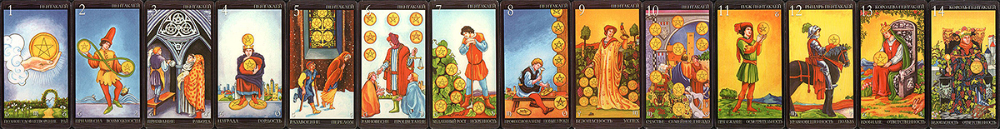
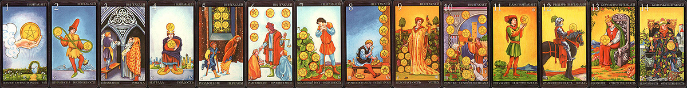

Пентакли — символ земли, это — масть, связанная с приобретением материальных благ. Принцип стихии Земли здесь отражается как нахождение, переработка, трата или накопление ресурсов. Характерным отношением к жизни, переданным через масть Дисков, будет сугубо земной, реалистичный и практический взгляд на жизнь.
В интерпретации системы традиции Золотой Зари и ее последователей Туз является потенциалом и корнем развития всей последующей масти.
Двойка – начало ее развития во встрече с противоборствующей или партнерской силой. 2 – пассивность, необходимость сделать выбор.
Тройка – продуктивность этой встречи. 3 – нерешительность, неуверенность, третий лишний.
Четверка – первичная форма масти. 4 – стабильность, замкнутость, ограниченность.
Пятерка – первый внешний конфликт данного никла развития масти и окружающего мира, объективной реальности. 5 – активность, действенность, целеустремленность.
Шестерка – восстановление после кризиса, обычно с новым методом использования ресурсов масти. 6 – гармония, инертность, баланс.
Семерка – новый кризис масти, обычно внутренний, но отражающийся на восприятии реальности и реагировании на нее.7 – рождение новых идей, создание, формирование.
Восьмерка – развитая форма цикла масти. 8 – реализации ситуации.
Девятка – наивысший пик развития масти, ее целостность и совершенство в данном цикле. 9 – усилия, направленные на реализацию задуманного.
Десятка – упадок развития масти, истощение прежних ресурсов. 10 – завершение ситуации.
 

-
возможность достижения устойчивого результата и обретения вечных ценностей, возможность быть счастливым, осязаемость, длительность, богатство внешнее и внутреннее
- Начало чего-то нового, появление новых ресурсов и приоритетов, приобретение конкретных благ, возможность нового опыта
- дар материальной реальности – процветание, достаточность, доход, обилие ресурсов, прежде всего земных. Что-то просто ДАЕТСЯ, как дар жизни, и обычно материальное
- Материалистическая энергия Туза Пентаклей помогает извлекать пользу из всего.
- Это одна из наиболее счастливых карт. Она говорит о возможности приобрести новый глубокий опыт, найти что-то постоянное и существенное, причем спектр действия очень широк, от финансового успеха до духовного обогащения.
- Полное удовлетворение, благополучие, довольство. Счастье, которое понимается в самом земном смысле - как прочное благосостояние, здоровье, стабильность в жизни, процветание, продолжительные и прочные чувственные отношения.
- это не просто материальное богатство. Это соединение материального и духовного благополучия. Он несет некое ценное осознание.
- Туз Пентаклей – сильнейшая эзотерическая карта. Не даром на нем изображены Врата. Этого нет ни на одном из других Тузов. Замыкая их череду, он показывает нам дорогу в иной мир. Именно этот Туз, плоть от плоти мира этого, считает своим долгом исповедовать существование мира иного. Сквозь окруженный зеленой изгородью сад дорожка убегает к цветочной арке, за которой голубеют горние вершины. Туз Пентаклей напоминает, что все земное – духовно. Прими все, что подарит тебе этот мир, говорит он. Погрузись к него, вернись к нему и познавай тайны жизни.
- Она полна чудес, не требующих никаких специальных магических манипуляций, потому что в ней все – магия. Все явное в ней – тайно. Все тайное – явно. Учись обращаться с телом как с живым храмом души, видеть священнодействие в самых простых вещах, чувствовать физическое счастье.
- Совет: радостно пользоваться многочисленными дарами Фортуны. Сконцентрироваться на стабилизации и обогащении своего бытия, обретении положительного и ценного жизненного опыта. Вносить в свою жизнь прочность, красоту, благосостояние. Мыслить предельно реалистично. накопительство не должно становиться смыслом жизни
- Новый счастливый поворот событий, прекрасные перспективы для совместной жизни.
- Туз Пентаклей – это индикатор крепких и устойчивых отношений, имеющих многолетний потенциал (если сюда добавляется Звезда – дело пожизненное)
- Традиционное его значение - огромное счастье.
- На самом деле, когда вопрос касается личной жизни, все Тузы указывают на присутствие мощной энергии, просто каждый из них акцентирует особое ее качество.
- Туз Пентаклей так же хорош для отношений, как и Туз Чаш, только с большим акцентом на чувственный аспект, обладание, физическое влечение. Он изрядно «заземляет» путь от сердца к сердцу и склоняет радовать друг друга предельно ощутимым способом.
- В любви – земные наслаждения, как правило в рамках продолжительных и прочных отношений.
- гибкость, разнообразие, распоряжение различными возможностями, смена точки зрения, то так, то так, приспособление к взлетам и падениям
- Наличие равновесия в каком-то вопросе
- постоянное балансирование, сведение концов с концами – но они обычно сходятся (на этот счет надо посмотреть окружающие карты)
- ощущение метаний из крайности в крайность: то пусто, то густо, то «все хорошо», то «все плохо»
- попытка контролировать несколько дел, ситуаций, проектов, отношений одновременно
- Традиционное значение не особо хорошее: суматоха, путаница, затруднение, недоумение
- «где-то выиграл, где-то проиграл, а все равно держись»
- суетная карта, и суета эта обычно связана с карьерно-денежными интересами.
- Иногда ее можно трактовать как «пошатнувшееся положение» - человек заметил признаки его ухудшения, услышал какой-то «тревожный звонок» (падающие доходы, недовольство коллег, изменившееся отношение и т.д.) и забеспокоился, теперь лихорадочно «активничает», ищет выход из неприятного положения
- Как прогноз Двойка Пентаклей сообщает, что в ближайшем будущем потребуются все деловые навыки и немалая доля изворотливости, чтобы поддерживать свои дела на должном уровне.
- Важное значение Двойки Пентаклей, по разному преломляющееся в зависимости от жизненной сферы и темы вопроса - присутствие двух равных возможностей, между которыми либо нереально, либо бесполезно выбирать.
- Совет: «Надо жить играючи». Двойка Пентаклей предлагает ни к чему не относиться слишком напряженно, видеть светлую сторону происходящего и мудро жить одним днем. Она также советует обратить внимание на какой-то противоположный плюс ситуации, которому не уделяется должного внимания.
- отсутствие как стабильности, так и особо драматичных и глубоких чувств.
- карта игрока, человека, которому безразлично, какое решение принять, потому что его сердце оно мало затрагивает, где-то в глубине души он лишь наблюдатель.
- Он пробует то тот вариант, то этот, ни к одному не относясь серьезно: получится – хорошо, не получится – тоже ничего страшного.
- лавирование между двумя партнерами. В комбинации с Семеркой Мечей это ситуация систематических измен, но все может быть и не так злостно
- Еще один яркий образ Двойки Пентаклей – качели (или маятник). В любом случае присутствует какая-то постоянная игра сил, а окружающие карты могут подсказать, что это за силы и до какой степени эта игра безобидна.
- Двойка Пентаклей – довольно игривая карта, она несет легкое возбуждение, флирт, заигрывание, хотя бы шуточное.
- что-то устойчивое уже достигнуто, пора браться за что-то новое, завершение какой-то фазы и переход на другой уровень, что-то сделано, должно быть оценено и сдано
- устойчивый прогресс в реализации идей.
- идеи материализуются, задуманное воплощается в жизнь, мечты осуществляются, причем это происходит благодаря усилиям самого человека и оценке со стороны других людей.
- карта конкретных поступков, труда, стабилизации достигнутого, приведения дел в порядок
- Она также возвещает горячую пору проверок и зачетов, ситуаций, где действия человека оцениваются со стороны.
- Главное значение Тройки Пентаклей - претворение в жизнь проектов, движение вперед, развитие профессиональных навыков, обретение прочных знаний.
- важность объединения усилий, обмена мнениями в любом, даже самом индивидуальном деле. То есть для решения проблемы нужен как минимум еще один или даже два человека, помощь каких-то экспертов, консультантов, советчиков.
- Совет – творчески трудиться, повышать квалификацию, развивать профессиональные способности, прилагать усилия к своему прогрессу. Закатать рукава и вкалывать! Предупреждение: слишком большая зависимость от чужого мнения.
- карта становления и восстановления отношений, стабильности, совместной жизни и нередко к тому же совместной работы.
- По Тройке Пентаклей человек становится зодчим, котороый «строит отношения» и кузнецом, который «кует счастье». Результаты его усилий материализуются, обретают форму – то есть, не проходят даром.
- означает решительный шаг к наполненным зрелым отношениям.
- Проблемы решаются, препятствия преодолеваются, общение переходит на новый уровень, партнеры переживают эмоциональное и сексуальное развитие, отношения приносят удовлетворение.
- Человек, описываемый Тройкой Пентаклей, рассматривает отношения как очень важную задачу, своего рода экзамен – он постоянно к нему готовится, постоянно его сдавая. Он каждый день что-то предпринимает и каждый день задумывается, что он сделал и как. Он очень хочет соответствовать желаниям другого и сделать его счастливым. Это настоящее усердие.
- В случае если человек один, то он готов сделать шаг навстречу другому, выбрать себе партнера.
- Так как Тройка Пентаклей означает инициацию, это может быть и указанием на готовность вступить в прежде скрытую, но теперь вполне достижимую область жизни.
- убежденное владение чем-то, окружение себя крепостной стеной, попытки удержать, желание зацепиться за что-то, предостережение о потере гибкости
- Карта описывает нечто выстроенное с трудом, но и с определенным запасом прочности. Это может быть что угодно – бизнес, здоровье, отношения или система ценностей.
- Это карта обладания и сохранения того, что нам принадлежит, удовлетворенности теперешним положением и желания его сохранить. На этом сконцентрирована энергия человека, которому выпала Четверка Пентаклей.
- символизирует расчетливость и тщательное планирование, готовность действовать, чтобы достичь желаемой стабильности, или сохранить существующий порядок.
- своего рода блокировка и стагнация.
- Четверка говорит, что человек достиг желаемого и больше не стремится к новым вершинам: и так вполне хватает того, что есть. Прикладывать же какие-либо усилия ради обретения большего нет намерений.
- Старинное значение - человек, достигающий успеха, но небольшого.
- Карта символизирует некую «экологическую нишу», занимаемую человеком в социуме - куда-то пробился, чего-то добился, пытается удержаться. Достигнутый успех здесь закономерен и является следствием усилий.
- В Четверке Пентаклей вообще-то как нельзя лучше согласуются твердость и реальность стихии Земля (пентакли) и нумерологическая стабильность и упорядоченность Четверки. На карте изображен король с короной на голове, отгораживающийся своими Пентаклями от жизни. Он шагу ступить не может (два пентакля лежат под его ступнями), думать не может ни о чем другом (третий пентакль «давит» на корону) и одержим идеей защититься и обезопасить себя (четвертый пентакль закрывает центр его тела на манер щита).
- Совет: определенно лучше синица в руках, чем журавль в облаках (хотя сжимать эту синицу вплоть до удушения все-таки не стоит). Совет защитить достигнутое от внешней угрозы, обезопасить себя и свое имущество, провести четкие границы по периметру своей территории, крепко держаться за свое, сохранять невозмутимость, избегать малейшего риска, во всем действовать наверняка. Придерживаться своих планов, не уступать свои позиции. Предупреждение: не приобретать больше, чем нужно, не обращаться с людьми как с вещами и не застревать на своем подходе к делу.
- У Четверки Пентаклей немало разных значений в области личной жизни, и почти все они довольно негативны
- карта «нехочух». Как раз тот случай, когда друг или подруга не торопится под венец и всячески защищается от этой перспективы («мне и так хорошо»).
- Верность своим привычкам, нежелание сдвинуться с места, сопротивление переменам - срабатывают и здесь.
- Человек Четверки Пентаклей верит в правильность избранного пути и «ловить» тут нечего. Сара Бартлет пишет, что на Четверке Пентаклей изображен самый главный индивидуалист в колоде Таро.
- круг надежд и мечтаний человека на данный момент весьма ограничен, и что бы ему ни говорили о необходимости сделать следующий шаг в направлении построения отношений, он только досадливо отмахивается.
- Важная характеристика этой карты – неспособность делиться (в данном случае это буквально нежелание «поделиться собой» с другим человеком).
- карта собственнических чувств в отношениях, стремления удержать «свое», защитить свою живую ценность (и имущество). «Я тебя никому никогда не отдам».
- Желание удержать любовь под замком, не давать партнеру свободы, не допускать и малейшей доли такого риска.
- Установление границ ради безопасности, страх и желание полного контроля над ситуацией (вплоть до низости), проистекающие из любви к благополучию как сам человек его понимает, а еще точнее – из эмоциональной уязвимости и страха перед будущим.
- Ревность (если рядом еще Мечи и Дьявол – Отелло готов).
- чистейший союз по расчету, где деньги играют роль первую и последнюю
- По этой карте проявляется жажда иметь твердую почву под ногами, а также склонность к соблюдению правил. Никакой неопределенности в вопросах любви человек не допускает, совершать опрометчивые поступки не намерен, вообще чувство самосохранения заменяет ему все остальные.
- Ключевые слова Четверки Пентклей – иметь, обладать, принадлежать. «Отдавать» и открываться она очень не любит. Как правило по этой карте не до секса, она несет аспект ригидности и чувственного равнодушия.
- Вообще надо заметить, что Четверки (кроме ПЕНТАКЛЕЙ) выпадают, когда в отношениях все плохо.
- Если карта описывает семейную жизнь, то скорее всего это выглядит как стабильность и порядок, цена которым – утрата новизны, застой, отсутствие движения, зацикливание на материальных ценностях и заботах, на обладании и безопасности.
- кризис, нужда, неуверенность, жертва, беспокойство, зыбкость почвы под ногами, бедность внеш. и внутр., нехватка чего-то, мрачное ощущение замешательства и глубокого страдания, предвестник нестабильности, из ситуации не так просто выбраться
- Пятерка Пентаклей традиционно считалась картой хорошей для любви и плохой для денег. Она предвещала юношам и девицам брак по любви, по велению сердца, но вопреки всем меркантильным соображениям
- обычно означает потерю чего-то материального и приобретение взамен житейского опыта, извлечение урока
- Все Пятерки символизируют начало преобразований, которые должны в корне изменить нашу жизнь, и это не проходит безболезненно.
- это карта тяжелых времен, кризиса, лишений, треволнений, утрат
- Универсальное значение карты – недостигнутые цели, провальные предприятия, ошибки и неудачи, катастрофы в бизнесе, материальные потери, даже нищета
- столкновение с неприятными жизненными реалиями, разбивающими иллюзию совершенства. Карта предрекает утраты и подавленное состояние духа, причем речь идет не обязательно о материальных проблемах – просто о том, что предстоит трудный период и придется потуже затянуть пояс, чтобы преодолеть его.
- Это время усталости и изможденности (нехватка физических сил, потеря жизненной энергии и радости), или бедности, нищенского существования (нехватка денег, невозможность улучшить материальное положение), или отчаянного одиночества (нехватка любви, холод, отверженность, отрезанность от близких), или неуверенности в себе (потеря веры в себя, в свои способности и умения).
- По этой карте проходят потрясения, вызванные началом каких-то преобразований в жизни.
- Традиционное толкование «все разрешится по истечении пяти недель»
- Пятерка Пентаклей означает сложности, трудности, приводящие к успеху и утверждению на новом уровне (по Шестерке Пентаклей это как минимум удача в получении помощи), либо возвращающему назад, на уровень Четверки.
- Вообще, если Четверки – это уверенность и упорядоченность в жизни, то Пятерки – внешнее воздействие, разбивающее иллюзию совершенства и ввергающее в подавленное состояние духа.
- На карте изображены нищие под окнами храма. Жалкие фигуры двух калек показывают, насколько человек не властен над земным. Свободная воля часто лишь калечит человека: он зачастую не способен без ошибок идти по своему жизненному пути (и в итоге чувствует беспокойство из-за растрат и нарушений). Эта карта показывает пространство, которое человек создает сам, но часто оно оказывается далеким от совершенства из-за его чрезмерных амбиций и нереализуемых желаний.
- Есть мнение, что бредущие в снегопад двое нищих отражают общее состояние всего человечества. Свет в витражном окне символизирует эзотерическую мудрость, постижение которой дает освобождение от мирских невзгод. Увы, бедолаги бредут мимо, не догадываясь о том, что избавление рядом, хотя на груди у калеки висит колокольчик, символизирующий глас интуиции.
- Часто этой карте приписывается значение привязанности к любовнику или любовнице,
- но это скорее смысл крепкой, неразлучной связи двух людей, которые страдают вместе, непризнаваемые обществом, но никогда не расстанутся, какие бы тяготы не подразумевала их связь.
- Иногда по ней человек идет через нравственные мучения к в прямом смысле выстраданному решению.
- Иногда эта карта все-таки означает именно депривацию, лишение любви, утрату.
- Иногда карта говорит о том, что двое устали друг от друга и ждать сейчас особо нечего.
- Иногда выражается и в разлуке с партнером, и в одиночестве, и во внезапном разрыве отношений (уход одного, брошенность другого, уходящий может чувствовать себя брошенным и т.д.).
- может быть период в отношениях, когда по крайней мере один из партнеров плачет в подушку от чувства беззащитности и неуверенности в себе, ему больно и страшно и он мучается ощущением, что рядом с другим ему делать нечего, он нелюбим и ненужен.
- Комплекс неполноценности и образ мысли жертвы.
- Чувство одиночества, ненужности, покинутости, отверженности, душевной израненности.
- Иногда – разобщение людей, проблематичная коммуникация в отношениях, они под угрозой и все кажется совершенно безнадежным и невозможным.
- может описывать горячо любящего и глубоко страдающего партнера, который «стоит у двери и стучит» (а иногда в прямом смысле готов жить под дверью на лестничной клетке), покуда сердцем он куда богаче отвергающего.
- баланс между желанием отдавать и умением принимать, щедрость, терпимость, вы помогаете, вам помогают, это несложный шаг который вам надо сделать, позитивное взаимодействие сил к общему благу
- карта подарков судьбы (и просто подарков), награды, восстановленного благополучия, решения прежних проблем, получения желаемого, сбывшихся надежд, материальной выгоды.
- получение помощи по обстоятельствам
- готовность прийти на помощь, великодушие и терпимость. Она может указывать, что мы сами обладаем такими качествами, или что кто-то проявит их по отношению к нам.
- не менее важное значение - внимательность и бдительность, особенно если дело касается какого-то выбора (идет своего рода скрытая ссылка на Шестой Аркан – Влюбленные или Выбор).
- В личных отношениях карта взаимной поддержки и уступок, и фундаментального социально-психологического принципа «ты – мне, я – тебе» и равновесия между «давать» и «брать». Чем обмениваются партнеры, могут подсказать другие карты. Даже если страсть любви ушла или в принципе отсутствует, дух сопереживания, взаимопомощи, взаимопонимания налицо, и это вполне может ощущаться как счастье.
- Каждый дает то, что может, и принимает то, что предлагается другим.
- Обычно по этой карте партнеры очень разные, каждый богат как раз тем, чем другой беден, и это может быть все что угодно: красота, молодость, деньги, жизненный опыт, сексуальная энергия, карьера и т.д., в разной комбинации распределенное в этой паре.
- Как брачный партнер – явно не ровня, благодетель или как минимум «крепкое плечо». Возможно – тот, кто помогает решить проблемы, бросает спасательный круг, вызволяет из каких-то неприятных обстоятельств.
- Это может быть и тот случай, когда менее любящий делает шаг навстречу более нуждающемуся в любви, чтобы сделать его счастливым и, по сути, вознаграждает его собой.
- Бывает также, что это «купленная любовь», причем совсем не обязательно деньгами и импозантностью. Валютой могут оказаться устойчивая забота, восхищение, привязанность, ласка, покорность (и в случае, если рядом, например, Луна, это так и есть).
- может быть и неожиданный подарок от близкого человека.
- кризис испытание, в котором можно потерпеть поражение, время работает на вас, если подождать, проявить выдержку, долгожданный результат будет достигнут
- вековое значение Семерки Пентаклей, с которым не поспоришь – «малое воздаяние за изрядный труд»
- самое простое послание карты состоит в том, что мы тратим большое количество душевной энергии на то, что на самом деле не так уж и важно.
- бесперспективные вложения
- внушающее надежду протекание какого-то процесса, который пока не окончен и потребует дальнейших усилий и вложений (а о характере результата скажут окружающие карты)
- Возможность постоянного развития – вот на что указывает эта карта.
- Это карта долговременных проектов, где добиться скорых результатов нельзя и ускорить развитие событий не получится.
- В любом случае, обстоятельства, описываемый Семеркой Пентаклей, требуют терпения и выдержки.
- Карта говорит, что ВСЕ В ПРОЦЕССЕ. Процесс (как противоположность «результата») идет. Результаты требуют времени, того самого процесса, срывать неспелые плоды нет смысла.
- Ее появление в раскладе говорит о том, что настал момент. Пока это не момент Истины (он еще впереди), но уже момент оценки. Она словно говорит: ну, дорогой, отложи мотыгу (лопату, грабли, планшетник или что там у тебя), погляди на сделанное и спроси – оно мне надо?
- Если надо –работай дальше (следующая карта – Восьмерка Пентаклей).
- Если не надо – подумай, может быть нет смысла напрягаться в этом направлении. Поскольку к этому моменту вложений сделано уже обычно немало, такое решение дается нелегко и радости не вызывает.
- Время и терпение вместе ведут к важному аспекту Семерки Пентаклей. Это – отсутствие какого-то радикального «исхода». Скорее всего все просто тихо-мирно будет продолжаться или сойдет на нет естественным путем.
- эта карта призывает ни в чем не торопить события, не искать скорых результатов, научиться жить терпеливо и невозмутимо, доверяя медленным процессам естественного роста. Надо не спешить и нервничать, а вести себя спокойно и флегматично, даже если все идет медленно. Когда эта карта появляется в раскладе, ясно, что вопрошающий вложил во что-то немало сил, а результат все не приходит. Он разочаровывает, но он просто не окончательный (Семерка не Десятка).
- Поскольку урожая обычно ждут на следующий год, то карта может означать год времени. Иногда Семерка Пентаклей намекает на интересную ситуацию – у нас не идет что-то, над чем мы долго бились, что нас волнует и во что мы осознанно вкладывали массу труда, но при этом в каких-то других жизненных вопросах, которые мы как бы и не замечаем, мы достигли больших успехов
- Семерка Пентаклей, выпавшая на личные отношения, ставит вопрос «Что будет дальше»?
- Мы оцениваем достигнутое положение и в зависимости от того, устраивают нас результаты или нет, преисполняемся либо хандры, либо уверенности в правильности своих действий и готовности сделать следующий шаг.
- Но в любом случае Семерка Пентаклей говорит об отсутствии окончательного результата.
- Например, если окончательный результат видится как свадьба, то состоится она явно не завтра.
- Это карта ожидания, время «собирать урожай» по ней не пришло.
- Постепенное неспешное развитие отношений благодаря постоянной работе по их построению. Это не тот случай, когда все легко, просто и бурно.
- Вложения друг в друга сделаны, теперь надо просто терпеливо ждать всходов, они неизбежно будут, хоть и не прямо сразу. Терпи и жди, ты же знаешь, с кем связался(лась), дай человеку созреть, отношениям оформиться. Ты бросил семена, они уже принялись в сердце другого человека, даже если всходов пока не видно. Доверяй естественным процессам роста.
- ИЛИ: дело безнадежно зависло и лучше, чем есть, не будет. Возросшая лоза символизирует вожделенную цель, к которой мучительно стремится вопрошающий, только сейчас он совершенно не удовлетворен достигнутым. Интересно, что это значение чаще проявляется у женщин, безнадежно мечтающих затащить сожителя под венец
- Здесь часто кажется, что отношения стоят на месте, но это не «вис» Четверки Мечей, просто указание, что они развиваются маленькими шажками и впереди еще порядочный путь.
- новые начинания – решительный шаг, продуманный, взвешенный, предвещающий несомнен. развитие, готовность учиться, подготовка, составление плана, внутр. готовность к след. шагу
- карта обещает медленное, но верное продвижение вперед в том, чего касался вопрос,
- Она сообщает о том, что мы явно что-то затеяли и чем-то заняты, все в наших руках, и все идет правильно, но требует внимания к деталям и продолжения усилий.
- Умелая, мастерская и очень тщательная работа, какое-то дело –
- Предельная концентрация и полное погружение в работу, что само по себе может быть счастьем или несчастьем для человека.
- карта Созидания, целенаправленного использования энергии, накапливания и применения умений.
- это путь личных усилий, который медленно, но верно ведет к хорошим результатам
- может быть, например, приобретение новых умений, что естественно ведет к увеличению заработка или получению каких-то привилегий, но тайна этого Аркана (ведь само слово Аркан означает «тайна») –творить, а не гнаться за наградой.
- Вообще эта карта символизирует глубокое удовлетворение, которое человек получает от отличного применения своих талантов и способностей.
- Планомерная методичная повседневная работа, предусмотрительное планирование, спокойная и осторожная упорядоченность всех дел.
- Это вознаграждение старого мастерства и быстрое обретение нового, обучение конкретному практическому искусству, расширение кругозора. Приобретение новых навыков
- человек хорошо знает, к чему стремится и как этого достичь (даже если не отдает себе в этом отчета), и ничто не может ему помешать. Точность, аккуратность и проработка деталей становятся источником увлечения.
- может указывать на то, что в сложившейся ситуации проверке будет подвергаться наше терпение, важно не сорваться и идти до конца.
- В худшем случае Восьмерка Пентаклей указывает на рутину, какую-то наскучившую ситуацию, беспробудное выполнение обязанностей. Это могут быть довольно жесткие, давящие ситуации
- Совет делать и далее столько, сколько необходимо, и как можно тщательнее, чтобы достичь успеха. Человек сам кузнец своего счастья, так что следует засучить рукава - и вперед! Ковать, ваять и стяжать.
- человек усердно трудится над развитием отношений, иногда буквально полностью посвящает себя им
- искреннее стремление сделать все хорошо, как можно лучше, причем человек рассматривает свой вклад в отношения как школу самосовершенствования. Чем больше он вкладывает в отношения, тем больше получает.
- Совершенствование умений, необходимых в совместной жизни.
- Терпеливость, взаимная заботливость, внимательность, такт – но не бурное проявление эмоций.
- Традиционные значения этой карты – чистосердечие, целомудрие и скромность
- То, что традиционно именовалось «серьезные намерения».
- Реалистичные ожидания и готовность нести обязательства. Время работает на эти отношения.
- Восьмерка Пентаклей, имея значение результата или события, которое заставит себя ждать, описывает также позднюю любовь, ту, что приходит на склоне лет. Иногда она оказывается не только поздней, но и первой, и тогда человек чувствует себя зеленым новичком несообразно годам, но внутренняя зрелость делает свое дело, он быстро учится, сходу обретая изысканное качество.
- Если человек одинок, то Восьмерка Пентаклей – это хороший знак, описываемое ей развитие позитивно. Она говорит о том, что вопрошающий выходит из какого-то тяжелого и инертного периода, начинает подготовку к новому жизненному циклу. Возможно, человек на какое-то время «закрылся» из-за болезненного опыта в прошлом, а теперь начинает открываться новым возможностям, чувствует желание обзавестись семьей. Он готов предпринять какие-то шаги, общаться более глубоко и доверительно, проявлять при это скромность и терпение.
- По этой карте дела делаются честно. Даже в случае развода, раздел имущества будет справедливым, а весь процесс довольно-таки чинным
- внутр. спокойствие и концентрации, выгода, сюрприз судьбы, благоприятный момент не упустить, чтобы обрести собств.счастье, внутр и внеш богатство
- Одиночество, трудности в контактах с людьми. Девятка отбрасывает то, что не связано с успешным окончанием какого-то дела: если долго ждал что-то то получит это, наскоком ничего
- считали картой финансового успеха, материального роста и благосостояния, выигрыша, крупной и часто неожиданной прибыли.
- карта описывает «закрепление успеха». Ключевое слово – безопасность, защищенность. Это карта довольства и процветания.
- Смысл этого Аркана – умелый подход к любым благам жизни, умение ими распоряжаться наилучшим образом.
- удовольствие не от самопотакания, а от хорошо выполненного прежде труда.
- покой и стабильность, потому что выполненными делами чиста совесть.
- Упорядоченность жизни, отсутствие забот, уверенное положение
- способность оперативно обернуть любой удачный момент себе на пользу
- несет благоприятные возможности и перемены к лучшему
- В гадании значение Девятки Пентаклей Таро заключается в успешном завершении некого дела. То, к чему вы стремитесь, уже близко. Однако нет никакой гарантии, что это принесет гадающему счастье.
- Если его планы еще находятся на начальном этапе, можно быть уверенным в том, что они осуществятся. Однако браться ли за это дело – еще тот вопрос, ведь итоги не принесут гадающему никакой радости.
- Сейчас гадающему кажется, что он достиг пика в своем развитии. Отчасти это может быть правдой — сейчас он находится на вершине успеха, не имеет проблем с деньгами, не страдает от комплексов и не испытывает неуверенности. Однако это совсем не означает, что развитие гадающего можно считать завершенным. Эмоциональное и духовное развитие — это то, на что сейчас нужно обратить внимание. Оставьте материальную стороны в покое. Займитесь своей духовностью и позаботьтесь о хорошей карме. Эта карта часто предсказывает изменения личности гадающего в лучшую сторону.
- Значение карты Таро Девятка Пентаклей заключается еще и в рекомендации спросить совета у опытной женщины. Она знакома вам, вы уверены в ее репутации, надежности и мудрости.
- удовлетворенность. На ней изображен человек, наконец обретший покой.
- карта описывает самодостаточность, самостоятельность и комфортное одиночество, которым человек по-настоящему доволен, которое он выстроил под свои подлинные потребности и поэтому он не раз и не два подумает, предложи ему кто-то что-то менять.
- Девятка Пентаклей весьма дорожит тем, что имеет, и от добра добра, как правило, не ищет.
- Если эта карта выпадает как сигнификатор мужчины, которого вопрошающая уповает завлечь под венец, то дело крайне усложняется - холостяки Девятки Пентаклей представляют собой очень «труднообрабатываемую» породу, хоть и драгоценную.
- изобилие, процветание, благополучие, внутр и внеш богатство
- Приобретение имущества, удача, выигрыши, желанная любовь, получение должности. период богатства, стабильности, полноты жизни и уверенности в завтрашнем дне.
- главные значения - процветание, надежность и безопасность, исполнение какого-то земного желания
- то, ради чего человек работал, достигнуто
- Нечто уже выполнено и завершено, и настала необходимость перехода на другую ступень (это касается и взаимоотношений, и карьеры).
- Золотые времена уверенности, надежности и процветания, очень стабильная жизненная фаза.
- Эта карта обещает великую благосклонность жизни, обретение всех взыскиваемых ценностей.
- Она предвещает успех задуманного дела (хотя путь к успеху будет достаточно долог), и ощущение покоя и счастья после его завершения.
- карта является сигнификатором семьи, семейных дел, предков, родового гнезда. Она говорит о том, что все наследуется – земля, имущество, деньги, понятия.
- Всякая масть, достигшая кульминации, является испытанием. Десятка Мечей испытывает силой, Десятка ПЕНТАКЛЕЙ – тяготами успеха, Десятка Чаш – любовью. Здесь - испытание материальным благополучием. Не всякой душе дано пройти его и не деградировать. Истоки любого вида богатства лежат в человеческом сознании.
- Чтобы достичь внутренней полноты, нужно все время держать глаза открытыми.
- Таким образом, карта предупреждает, что за деловыми хлопотами и усердием нельзя забывать о делах душевных. За бытом, на первый взгляд таким серым, нужно уметь увидеть чудеса, которые он в себе таит.
- Эта карта – знак того, что чем бы человек ни занимался на данный момент (хотя скорее всего это какие-то очень земные вопросы), он полностью погружен в избранное дело, с головой ушел в это занятие и ничего больше не замечает вокруг. Поэтому он рискует упустить какие-то вещи, которые способны дать ему очень многое, может быть, даже больше, чем то, за чем он с таким усердием гонится.
- Совет карты - жить с уверенностью в завтрашнем дне, стремиться к стабильности и постоянству.
- карта счастья, стабильности и завершенности, она предполагает наличие семьи и тесных эмоциональных связей.
- Выгодный брак.
- Принятие в семью, обладающую широкими финансовыми возможностями и высоким социальным статусом.
- «образцовое» поведение и жизнь по правилам: хорошие отношения между родителями и детьми, прочное положение в семье, крепкий брак, вообще способность подавать пример.
- В ней сильна тема социального эталона – может ли твое поведение быть правилом и добродетельным образцом (что бывает очень важно для политиков, например).
- Тут сильна патриархальность, традиционность и стабильность, фактор «надежного тыла». Это карта единства, общности, соединенности людей.
- Уважение к традициям и их продолжение, знание своих корней и предков, привязанность к роду, семейственность (темы IV дома)
- «Вопросы крови – самые сложные вопросы в мире».
- Максимальное обогащение отношений, наслаждение всей полнотой любви, сила и прочность чувств. Естественность сексуальных проявлений.
- Семейные праздники, совместное времяпрепровождение.
- Возвращение в семью.
- По Десятке Пентаклей идут всякие формальные помолвки и оформления дарственных, наследование богатства и вопросы древности рода.
- ценные возможности, которым можно доверять, что-то устойчивое, осуществимое, солидное, выгодность, прибыльность, плодородие
- Терпение, широта взглядов, пристально разглядывает пентакль, поглощен занятием, ничего не видит вокруг, не движется, осторожность, получение содержательной информации
- несет важные для вопрошающего известия, и в соответствии с практичной мастью Земли, они, скорее всего, будут касаться учебы, работы и доходов.
- С ней связан рациональный и прагматичный подход к делам.
- чаще это возможность добиться успеха своими силами, осваивая какое-то новое занятие и находя применение своим способностям.
- В раскладе это возможность приобрести знания, успешная учеба, и судьба идет навстречу, предоставляя интересные возможности.
- знак того, что у вопрошающего есть хороший шанс начать новый проект. говорит о наличии ресурсов для задуманного дела
- карта очень способствует трудолюбию, прилежной работе, серьезному отношению к своим идеям и делам
- По Пажу Пентаклей к нам приходят заманчивые и действительно хорошие предложения, и от них не отмахиваться, если другие карты расклада этому не сильно противоречат.
- Паж Пентаклей всегда предполагает, что нам придется с чего-то начинать, осваивать и пробовать что-то новое.
- Даже если в целом расклад повествует о неудачах, присутствие Пажа Пентаклей сообщает, что в происходящем вполне можно найти зерно счастливой возможности (например, повернуться лицом в сторону новой сферы деятельности, которую до этого не воспринимали всерьез).
- особенно с Фигурными Арканами Чаш, предсказывает удачный путь вверх: возможность сделать хорошую карьеру, обрести поддержку интересующих людей, найти высокооплачиваемую работу
- речь может идти о выгодной сделке, просто о жизненном опыте или неожиданном, но очень благоприятном выходе из создавшегося положения.
- Если эта карта выпала человеку, мечтающему добиться успеха в любви, то она буквально говорит следующее: давай, работай над этим! Ставь реальные цели. Создай план. Думай об этом человеке, узнай его, изучи его. Пойми, что может произвести на него впечатление. Предпринимай шаги, один за другим. Если путь к его сердцу лежит через желудок (что в данном случае всего вероятнее), то записывайся на кулинарные курсы.
- Паж Пентаклей способен полностью сконцентрироваться на другом человеке, воспринимая его как драгоценное достояние. Он буквально готов носить на руках и сдувать пылинки, и в то же время жадно лакомиться своим счастьем до потери пульса.
- Иногда Пажа Пентаклей упрекают в приземленности, отсутствии романтики, вдохновения, воображения.
- прилежание, усердие, рабочая обстановка, ощущение стабильности, серьезные проекты, честность и продолжительность, упрямство
- Практичность, надежность, здравомыслие, консерватизм, осторожность, сдержанность в проявлении чувств
- карта всегда несет импульс ответственности, добросовестности, исполнительности и силы воли.
- Она сообщает, что дорога к успеху лежит через упорный труд и уверенность в собственных силах.
- Это указание на то, что надо заняться полезными делами, развивать свои таланты, научиться проявлять практичность, терпение, настойчивость, методичность, и в этом случае невозможного для тебя будет мало.
- Совет этого Рыцаря – ты достигнешь очень многого, но при условии, что абсолютно успокоишься и займешься вплотную работой.
- Появление этой карты может указывать на то, что вопрошающий усердно работает или работал, и потратил много сил в какой-то ситуации. Пришла ли пора почивать на лаврах, покажут другие карты расклада.
- Появляясь в раскладе, Рыцарь Пентаклей означает, что ситуация, развивавшаяся вяло и даже грозившая зайти в тупик, разрешится положительно.
- Традиционно этот Аркан символизирует полезного человека, получение ценной услуги («кто-то сослужит верную службу»).
- Рыцарь Пентаклей почти всегда указывает, что надо продолжать совершенствоваться, получать новые знания, идти намеченным путем, а поставленные задачи обязательно доводить до конца, даже если работа кажется тяжелой и неинтересной.
- Аркан несет планомерное продвижение к цели, здоровую и приятную повседневную деятельность.
- Эта карта олицетворяет человека, находящегося на середине трудного пути, в самом разгаре взятого на себя большого дела.
- Рыцарь Пентаклей на каждом шагу учится бережливо распоряжаться временем, энергией и деньгами, и поэтому может показаться занудой.
- С точки зрения девушки, он скучноват, так как мало о чем способен говорить, кроме дела, которым с увлечением занимается и которое знает.
- многогранная карта, говорящая, что рутина сейчас самое то. Лучше синица в руках. Надо жить в атмосфере постоянства, уважения и взаимной поддержки. Пафос этой карты - обязательства, ответственность, безопасность, доверие и терпение. Четкий финансовый и бытовой бэкграунд отношений.
- Рыцарь Пентаклей очень преданный товарищ. Отдавая должное плотским радостям как любой представитель земной стихии, он ревнив и не понимает ничего, кроме верности. Он собственник в чисто физическим смысле – радоваться телу партнера имеет право только он.
- если Аркан Рыцарь Пентаклей является сигнификатором отношений, то в их основе, скорее всего, лежат соображения практического толка и стремление к финансовой стабильности.
- спокойная, приземленная, надежная, нуждающаяся в стабильности и защищённости, искусна, изобретательна, остроумна, легко приспособ., ведет хозяйство, аспект материнства
- щедрость, практицизм, ответственность, консервативность, практичность, мудрость, забота о благополучии ближних
- в раскладе обычно означает благоприятные события, соответствующие желаниям вопрошающего.
- карта безопасной и стабильной материальной реальности, по ней идут такие проявления как надежная работа, стабильный доход, прочный брак, дом и страховка впридачу.
- Она крепко связывает нас с окружающим миром, его заботами и радостями, укореняет в простой жизни.
- Обычно эта карта указывает, что нам есть о чем «печься» и заботиться, она несет погруженность в земные заботы – покупки, хозяйство, ручной труд, наведение порядка, создание уютной обстановки.
- Ситуация стабильности, упорядоченности и комфорта, уверенности, благополучия и процветания (и часто вера, что все это будет обретено естественно, само собой, с минимальными усилиями). Не в последнюю очередь эта ситуация держится на здравом смысле и правильном видении вещей.
- Эта карта несет стремление к материальному достатку и удовольствиям, а также общее улучшение обстоятельств жизни.
- Королева Пентаклей символизирует собой обычно женщину (но не всегда), процветающую и обладающую солидной собственностью.
- Это может быть мать, супруга, женщина, содержащая дом.
- женщина состоятельная, привыкшая к изобилию и комфорту, с деньгами и с достатком.
- Королева Пентаклей в целом очень даже хороший знак в раскладе на отношения. Она умеет создавать нужные связи, вплоть до выгодного брака, и при определенных указаниях может быть даже сигнификатором свадьбы. Королева Пентаклей в первую очередь надежна, она возвещает безопасность домашнего очага. Это традиционный сигнификатор жены.
- практичен, готов взять на себя ответственность, реалистичные взгляды, все, что надежно и справедливо, спокойствие и уверенность, знаток своего дела
- мужественный, деловой человек, здравомыслие, символизирует деловой мир в целом, и указывает на подъем в делах, успех в любом предприятии, стабильную карьеру и хорошие перспективы, особенно в развитии долговременных проектов.
- карта связана с такими качествами, как предприимчивость и проницательность, успешность, опытность и компетентность, умение управлять.
- Она может указывать на стремление получать деньги и приобретать ценное имущество, на достижения и авторитет, на преимущество обладания какими-то ресурсами.
- Король Пентаклей - признанный и опытный лидер, имеющий за своей спиной немалый жизненный опыт, представитель деловых и финансовых кругов, успешный предприниматель. Он может обеспечить поддержку и воодушевить, дать мудрый совет. Он твердо стоит на ногах сам и может подсказать, как распутать клубок проблем.
- традиционное значение – зажиточный господин. Это человек, от которого придет практическая помощь, солидный, состоятельный, являющийся олицетворением стабильности и надежности. Как и все Короли, он олицетворяет компетентный и серьезный подход и ответственную жизненную позицию.
Корль Пентаклей может быть сигнификатором отца, супруга, состоятельного партнера, практического наставника, финансового консультанта, спонсора.
- В целом карта описывает стабильную ситуацию и прочную основу для любых начинаний.
- Традиционно Король Пентаклей – самый счастливый и довольный из Королей. Он наслаждается успехом, богатством, всем, чего достиг, и всеми благами земного счастья.
- Если Король Мечей генерирует блестящие идеи на ровном месте, а Король Чаш владеет искусством вызывать чувства и эмоциональные состояния как бы «из ничего», то Король Пентаклей во так же умеет создавать деньги – буквально из воздуха.
- описываемый этой картой - преуспевающий банкир, промышленник, коммерсант. Это реалист и прагматик высокого полета…и крепкого сложения.
- По этому Аркану мы осознаем ответственность, которая приходит вместе с обладанием чем-либо. Именно Король Пентаклей, с его чувством реальности, понимает, что значат слова «ты навсегда в ответе за тех, кого приручил».
- Надежность, зрелость и ответственность в отношениях, с акцентом на защиту, заботу и обладание.
- Как сигнификатор Король Пентаклей описывает серьезные, продолжительные и зрелые связи между людьми, обеспечивающими друг другу развитие, благополучие, социальный статус и уверенность в завтрашнем дне.
- Обычно у Короля Пенталей весьма консервативные взгляды на взаимоотношения полов. Он ценит постоянство и любовь, но если не сложилось, то купит должное отношение к себе за деньги.